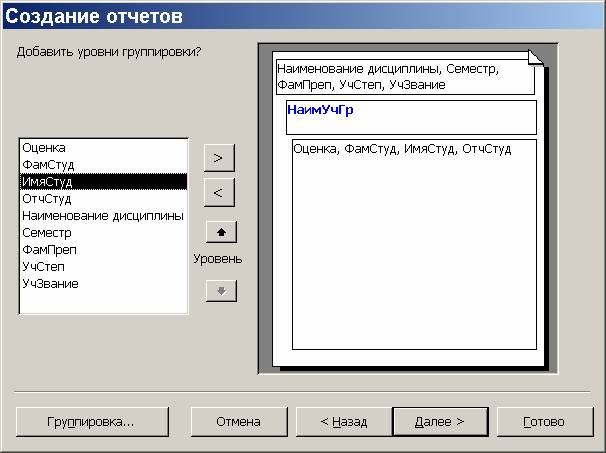
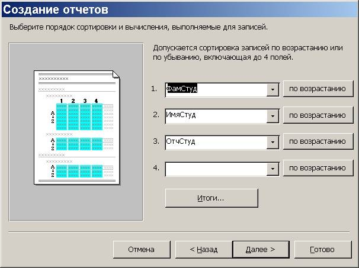
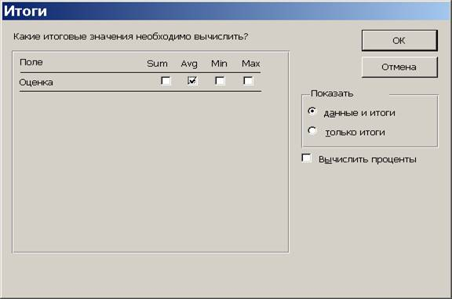
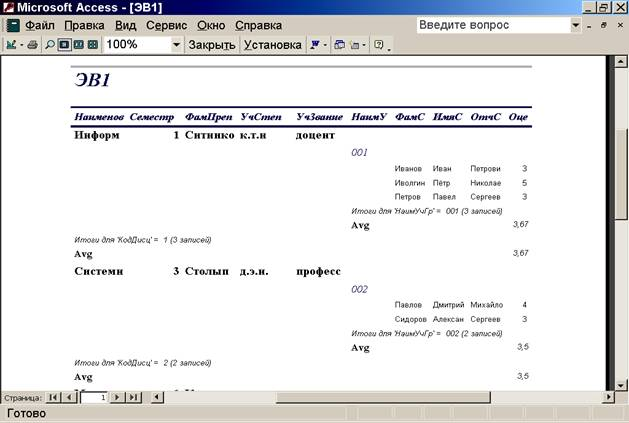
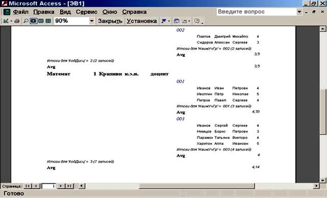
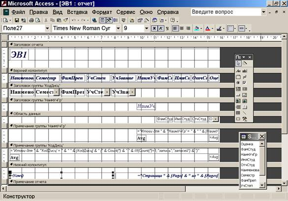
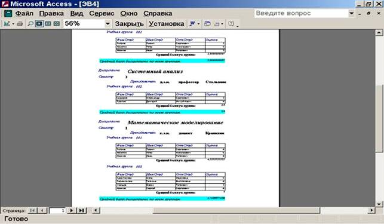
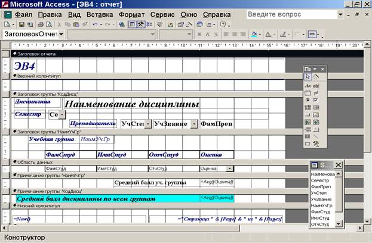

Лабораторная работа № 5: MS Access. Создание отчётов
Цель
занятия: изучить создание стандартных
отчётов с помощью мастера и в режиме конструктора, группировку записей,
сортировку полей, вычисление итоговых значений, просмотр отчётов, модификацию структуры
и форматирование отчётов.
Краткие
сведения из теории
Отчет – это средство отображения данных при выводе на
печать. Структуры Экранных форм и Отчетов похожи, т.е. все, что
говорилось о формах, справедливо и для отчетов. Основная работа происходит в
режиме Конструктора, т.е. Мастером создается “заготовка” отчета
(чаще всего она не подходит полностью для окончательного печатного документа),
а затем в Конструкторе этот отчет
корректируется/дополняется под нужные требования пользователя. Когда отчет создан,
то его выводят на печатающее устройство. Также его можно просматривать и на
экране, но необходимо помнить, что отчет создается для печати, т.е. он обычно
ограничен размерами стандартного печатного листа.
СУБД Access позволяет
создавать отчеты автоматически – Автоотчеты.
Существуют следующие виды:
·
в один столбец;
·
ленточный.
Структура этих Автоотчетов
такая же, как и для Экранных форм.
Следующие действия необходимо сделать для создания Автоотчета:
1. В окне базы данных выбрать закладку “Отчеты”.
2. Нажать кнопку “Создать”.
3. Выбрать режим создания отчета, например, Автоотчет в столбец.
4. Выбрать таблицу, на основе которой будет создаваться
отчет, например, таблицу “Список
предприятий”.
5. Нажать кнопку “Ок”.
Тогда запускается Мастер
автоотчета и он создает автоотчет.
Замечания:
1. Отчеты формируются постранично, т.е., если количество
полей большое, то не все поля одной записи могут поместиться на одной странице.
Можно увидеть не всю страницу, тогда с помощью линии прокрутки можно посмотреть
остальную часть страницы. Для просмотра всей страницы (макета страницы) можно
нажать кнопку “Масштаб”. Имеется также кнопка “Две страницы”, которая
позволяет увидеть макет двух страниц.
2. Использование Ленточной
формы автоотчета (все поля в одну строку) может дать очень широкий отчет
для большого количества полей.
Использование
Конструктора отчетов
Конструктор отчетов используется обычно для модификации структуры
отчетов, созданных с помощью Мастера.
Структура отчета
в Конструкторе похожа на
структуру Экранной формы, только добавлены
еще две части:
·
Верхний колонтитул – эта часть располагается в верхней части каждой страницы отчета;
·
Нижний колонтитул – эта часть располагается в нижней части каждой страницы отчета.
Замечание: Мастер при создании отчета вставляет в нижний колонтитул стандартную функцию Now(), а также выражение = “Страница” & [Page] & “из” &
[Pages], тогда в результате внизу каждой страницы будет выводиться текущая
дата и номера страниц в виде:
Пятница 28
мая 2000 Страница 2 из 6
Такие выражения могут создаваться пользователем с
помощью Построителя выражений. Для
запуска Построителя выражений
необходимо:
·
вызвать
контекстное меню на нужном месте;
·
выбрать пункт Свойства;
·
выбрать закладку Данные;
·
нажать кнопку Данные.
Мастер
отчетов
Можно использовать Мастер отчетов для создания более сложных отчетов, чем Автоотчеты.
Запуск Мастера:
1. В окне базы данных нажать кнопку Создать.
2. Выбрать режим Мастер отчетов.
3. Выбрать таблицу, на основе которой будет создан отчет.
4. Нажать клавишу Ок, тогда запускается Мастер:
Шаг 1:
выбрать поля, необходимые в отчете.
Шаг 2: можно
определить параметры группировки, например, в Списке товаров сгруппировать по Коду предприятий.
Шаг 3:
выбрать поле, по которому будет проведена сортировка (Код предприятия). Можно задать вычисление итоговых значений по
числовым полям (по Цене).
Шаг 4: определить
макет отчета.
Шаг 5:
задать стиль отчета.
Шаг 6: ввести
имя отчета.
Порядок
выполнения - на основе лекционного
материала и контекстной помощи MS Access
выполнить и описать порядок выполнения следующих пунктов задания:
1. Открыть БД, разработанную на
предыдущем занятии.
2. Для создания ведомости сдачи
экзаменов использовать данные следующих полей:
·
наименование дисциплины, семестр – из таблицы «Дисциплины»;
·
фамилия, учёная степень, учёное звание преподавателя – из таблицы
«Преподаватели»;
·
фамилия, имя, отчество студента, наименование учебной группы студента –
из таблицы «Студенты»;
·
оценка – из таблицы «Студенты и занятия».
3. Запустить Мастер и в диалоговом окне указать
наименования нужных полей (см.п.2).
4. Установить один из вариантов группировки, например,
как показано на рис. 34.1.

Рис. 34.1
5. Указать порядок сортировки и характер итоговых
вычислений, как показано на рис. 34.2, 34.3.

Рис. 34.2

Рис. 34.3
6. Результат работы Мастера :
·
в режиме
просмотра (рис. 34.4);


Рис. 34.4
·
в режиме конструктора
(рис. 34.5).

Рис. 34.5
7. Перейти в режим Конструктора и доработать полученный
отчёт с тем, чтобы он принял вид, представленный на рис. 34.6.

Рис. 34.6
Вид доработанного отчёта в режиме Конструктора представлен
на рис. 34.7.

Рис. 34.7